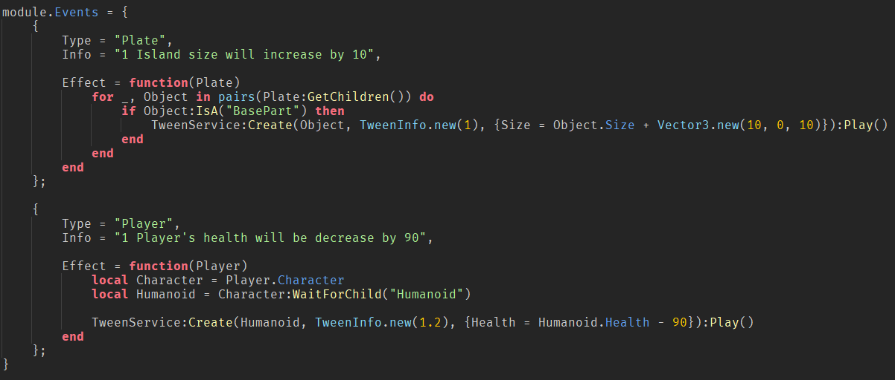

P1: bee game ripoff
an old game of mine that was never finished (you'll hear this quite a lot here)
whole game was made by me, including images, uses profilestore and OOP 🤯🤯 for bees
P2: "Seek and Hunt"
also one of the older games that got the closest to being finished
whole game made by me except for some of the map assets (i don't think they are shown in the video tho)
P3: "low budget incremental"
the only game that was actually finished and works relatively well, scripting, animations and UI by me
idea, images, models and map made by baj, uses an old version of TopbarPlus by ForeverHD made for an older version of Roblox UI, the game hasn't been updated in a while
check out baj portfolio!!! play the game hereP4: simple island game
simple round based island game similar to games like Horrific Housing by CookieScript
not much functionallity has been added but it's really to expand due to it's modular system and generated islands
P5: yba ripoff
more of a recent games, won't be finished cause i can't afford animations
stand model from toolbox (likely from yba), uses profilestore and a modular system for attacks, custom hitboxes
P6: wedge terrain generation
infinite terrain generation system using a three-point wedge-making function i found on devforum long ago, making terrain seem realisitc and smooth
works pretty smoothly, has a simple expandable system for props like trees and flowers, was planned for a survival game
P7: weapon system
tho made a long time ago, still my favorite one
works really simply and even allows knives, easily expandable, uses sine wave animations (except reloading for which im sorry), was made in Rojo
P8: fnaf ripoff
was planned to be simple fnaf ripoff, but not much was made, i might actually finish this one
has a pretty nice camera module working on simple math and an expandable interaction system
(sorry for the lack of sound in most videos, the games are not actually silent)